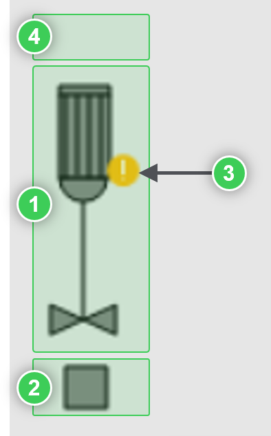
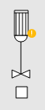
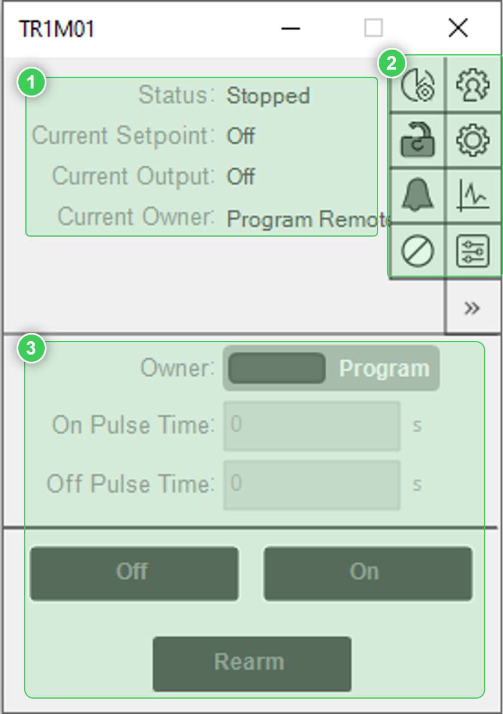
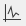
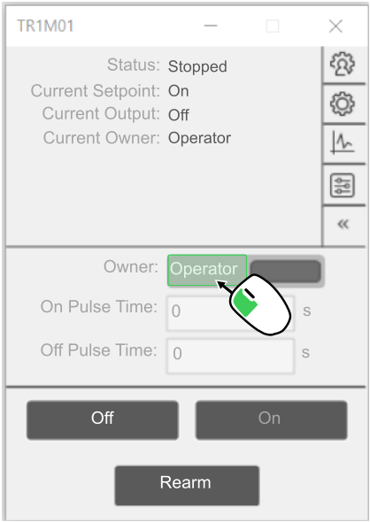
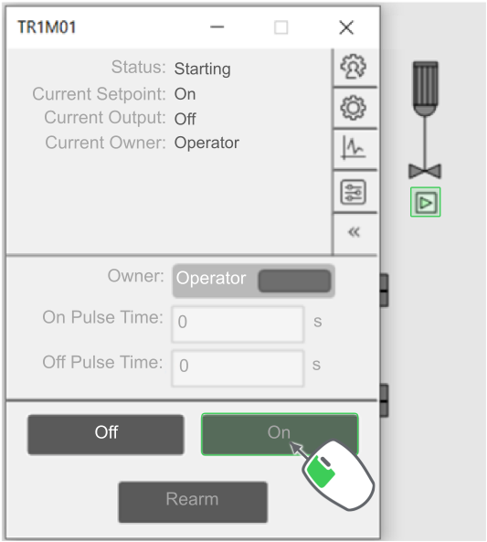
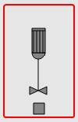
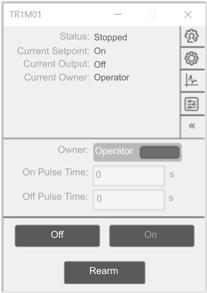
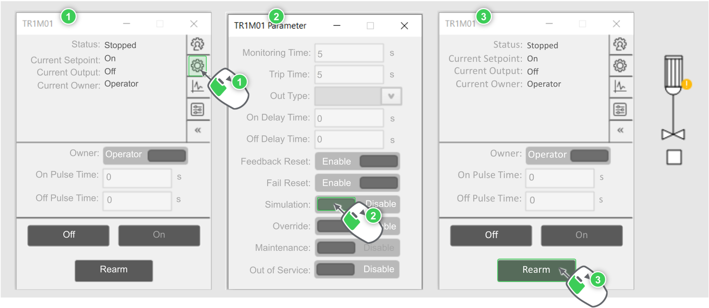
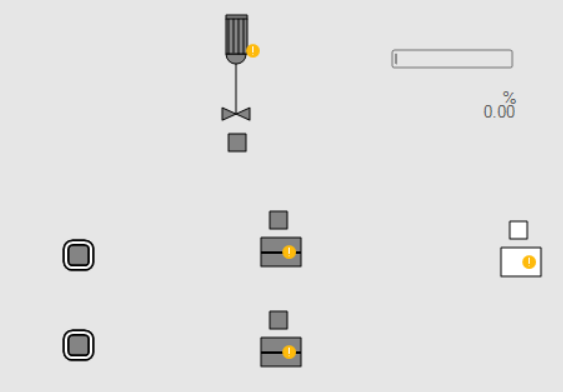

Testing Instruments Manually
Before starting to simulate the connections between instruments, it is important to know first how to manually manipulate the instruments.

|
NOTE:
As previously said, the representation of the instruments is interactive. Clicking on several parts open different faceplates. Note that their aspects can change depending on the situation. |
Let’s start with the agitator TR1M01.

1 | Body of the instrument
Its background color indicates its state:
-
dark gray → agitator is ‘Off’
-
white → agitator is ‘On’

2 | Command Status
This one is only informative (not clickable). It indicates that the instrument:
-
Is closed: the square’s background is dark gray.
-
Is opened: the square’s background is white.
-
Got the command to open: the square’s background is white with a green arrow facing one way.
-
Got the command to close: the square’s background is white with a green arrow facing the other way.
3 | Simulation information
This circle appears when the feedbacks of the instruments are simulated.
4 | Common services icons
Icons appears on top of the body of instruments when one of the common services is triggered. These common services are: interlock, permissive and failure.
|
|
NOTE:
To know more about these common services, refer to the SE.AppCommonProcess library documentation. |
Clicking on the instrument body opens the general faceplate of the instrument.
This faceplate gives general information about the instrument and gives access to other specific faceplates:
|
 |
1| General Information
This section gives general information of the instruments like its status, its current setpoint, output and owner. These are automatically updated if their value changes.
2| Specific Faceplate Icons
Here gathers icons of additional faceplates that can be open from the general faceplate:
-
: Opens the Owner faceplate defining which owner is allowed and which one is normal.
-
: Opens the Parameter faceplate containing all instrument parameters for the user to fine tune through HMI the instruments.
-

: Opens the Trend faceplate allowing the user to follow through time the changes of value of the instruments general information (see point 1 above). -
: Opens the Local Panel faceplate allowing the user to control the instrument from a local panel.
-
: Opens the Preventive Maintenance faceplate allowing the user to define alarms for preventive maintenance on the instrument and gathering information about instrument (total time of operation, time of the current operation and so on).
-
: Opens the Interlock faceplate gathering information about the interlock conditions of the instruments. If one interlock condition is active then the interlock icon will appear on top of the instrument symbol.
-
: Opens the Permissive faceplate gathering information about the permissive conditions to start the instrument. If one permissive condition is not active then the permissive icon will appear on top of the instrument symbol.
-
: Opens the Failure faceplate gathering information about the failure conditions of the instruments. If one failure condition is active then the failure icon will appear on top of the instrument symbol.
|
|
NOTE:
To know more about these common services, refer to the SE.AppCommonProcess library documentation. |
3| Instrument Commands
This section gathers commands to manually control the instrument.

|
These symbol functionalities and faceplates are also available in other instruments (not only for agitator). |
Now, let’s manually turn on the agitator from its general faceplate.
|
|
NOTE:
To manually turn on the instrument, the operator should have the ownership to control it. |
-
Switch the ownership from Program to Operator.


The On action will become available since TR1M01 is currently Off. -
Click on On to command of turning On the agitator.

The command state indicates that:
-
the open command has been sent.
-
the agitator is waiting for the open feedback to validate its opening.
NOTE: However, as the instrument is not real, no feedback will be given. That is the reason why, after 5 seconds, the instrument will trip, and an alarm will be activated to inform the missing of the open feedback.

-
-
Acknowledge this alarm.

Then there are two options available:
-
Option 1: Turning back Off the agitator.
-
Option 2: Rearming the agitator. This will try turning On the agitator again.
For this second option, if there is no state change is done after 5 seconds then the instrument will get back to the same status.
NOTE: This time, to succeed in turning On manually the instrument, its open feedback needs to be simulated from its Parameter faceplate.
Once there, enable the simulation and the open feedback will be simulated.

-
|
|
Now that the feedback is simulated, the status can be switched as wanted from On to Off and Off to On. |
Try also with the valves.
-
Switch the ownership to the Operator.
-
Then, simulate their feedback and rearm to reset their status.
-
Finally, try opening and closing the valves.
|
 |